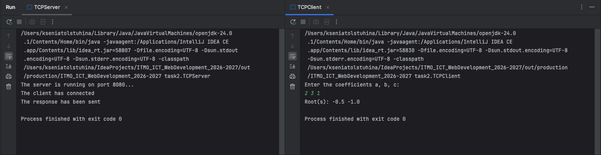

Задание 2 - Вычисления через TCP
Задача
Клиент вводит коэффициенты a, b, c квадратного уравнения. Сервер считает корни и возвращает результат. Протокол — TCP
Теория
TCP, в отличие от UDP, требует установления соединения и гарантирует доставку и порядок байт
В Java для сервера используется ServerSocket, для клиента — Socket. Метод accept() на сервере блокируется, пока клиент не подключится, и возвращает новый сокет для общения именно с этим клиентом
Код сервера
package task2;
import java.io.*;
import java.net.ServerSocket;
import java.net.Socket;
public class TCPServer {
public static void main(String[] args) throws IOException {
int PORT = 8080;
ServerSocket socket = new ServerSocket(PORT);
System.out.println("The server is running on port 8080...");
Socket clientSocket = socket.accept();
System.out.println("The client has connected");
BufferedReader input = new BufferedReader(new InputStreamReader(clientSocket.getInputStream(), "UTF-8"));
PrintWriter output = new PrintWriter(new OutputStreamWriter(clientSocket.getOutputStream(), "UTF-8"), true);
double a = Double.parseDouble(input.readLine());
double b = Double.parseDouble(input.readLine());
double c = Double.parseDouble(input.readLine());
double discriminant = b * b - 4 * a * c;
if (discriminant > 0){
double x1 = (-b + Math.sqrt(discriminant)) / (2 * a);
double x2 = (-b - Math.sqrt(discriminant)) / (2 * a);
output.println(x1 + " " + x2);
} else if (discriminant == 0) {
double x = -b / (2 * a);
output.println(x);
} else {
output.println("no roots");
}
System.out.println("The response has been sent");
clientSocket.close();
socket.close();
}
}
Код клиента
package task2;
import java.io.*;
import java.net.Socket;
import java.util.Scanner;
public class TCPClient {
public static void main(String[] args) throws IOException {
String HOST = "localhost";
int PORT = 8080;
Socket socket = new Socket(HOST, PORT);
BufferedReader input = new BufferedReader(new InputStreamReader(socket.getInputStream(), "UTF-8"));
PrintWriter output = new PrintWriter(new OutputStreamWriter(socket.getOutputStream(), "UTF-8"), true);
Scanner sc = new Scanner(System.in);
System.out.println("Enter the coefficients a, b, c: ");
double a = sc.nextDouble();
double b = sc.nextDouble();
double c = sc.nextDouble();
output.println(a);
output.println(b);
output.println(c);
String result = input.readLine();
System.out.println("Root(s): " + result);
socket.close();
}
}
Запуск
# Терминал 1
java -cp out task2.TCPServer
# Терминал 2
java -cp out task2.TCPClient
Пример
